| 160m Band | |||||||||||||||||||
| Brand | Selfmade | Selfmade | Selfmade | Selfmade | Selfmade | Selfmade | Selfmade | Selfmade | Mazzoni | Mazzoni | Mazzoni | Mazzoni | Mazzoni | Mazzoni | Mazzoni | Selfmade | Selfmade | Selfmade | |
|---|---|---|---|---|---|---|---|---|---|---|---|---|---|---|---|---|---|---|---|
| Name | 3P | 0.86m n2 | 1.25m n2 | epicenter | fesz_0.65 | fesz_0.95 | foil_pvc_0_71 | 1_9_heliax | Baby | Baby | Baby | Midi | Midi | Stealth | Stealth | Tubby indoor | Tubby outdoor | square_1m | |
| Location | HB9BPO | DK3SS | DK3SS | W6NBC | YO2FZT | YO2FZT | F4WDO | HB9ASB | Datasheet | HB0SM | HB9PWD | Datasheet | HB0SM | Datasheet | HE9DJB | HB9ISP | HB9ISP | EA4AGY | |
| Color | |||||||||||||||||||
| Picture |  | 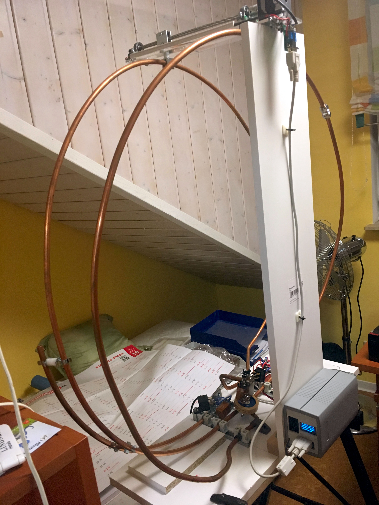 |  | 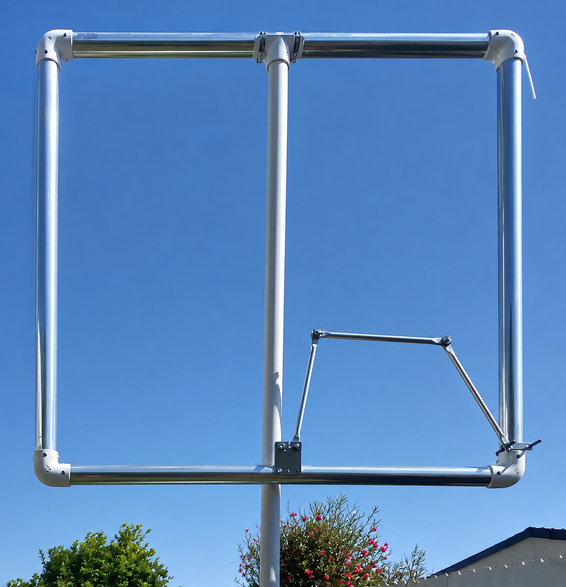 |  | 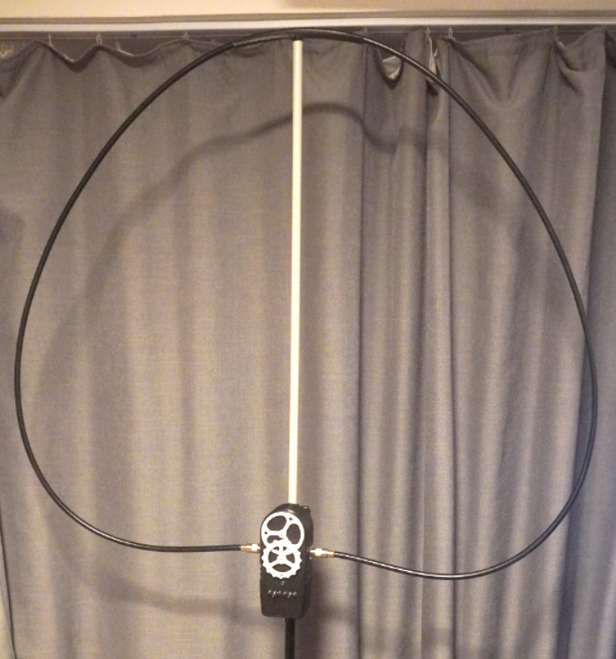 | 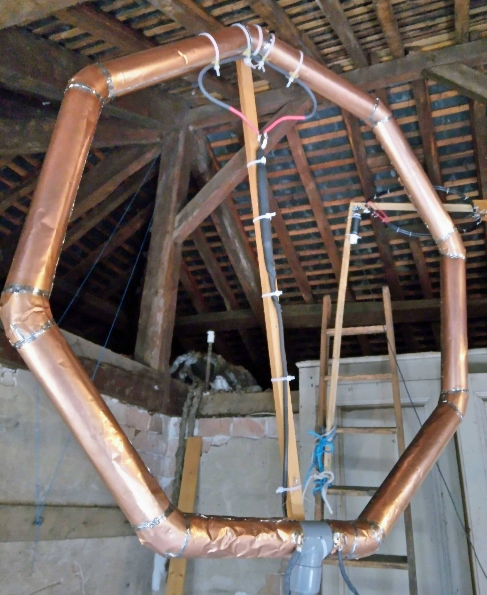 |  |  | 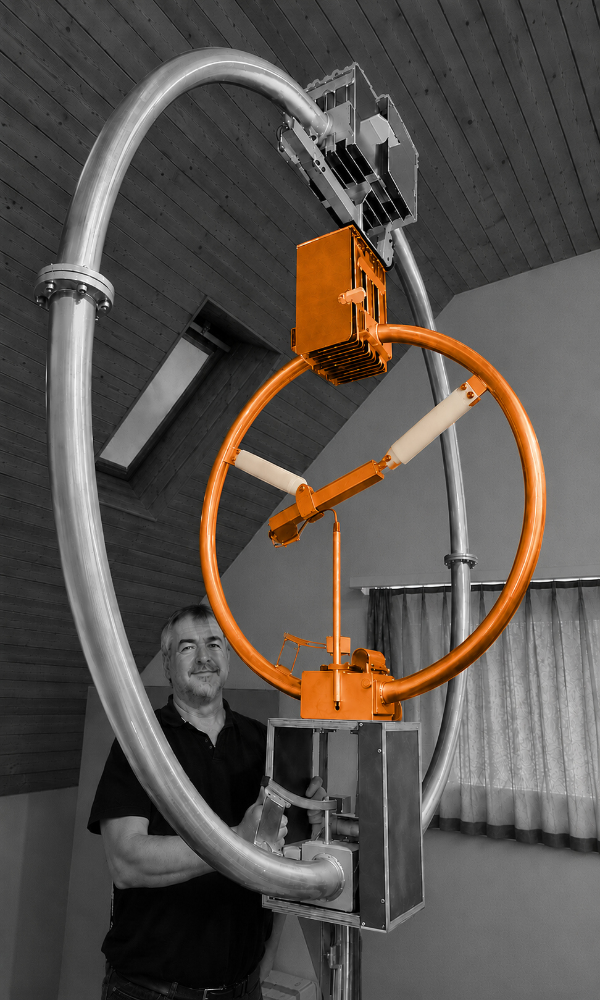 | 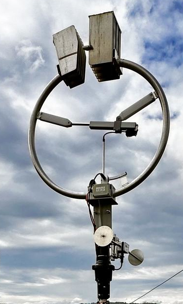 | 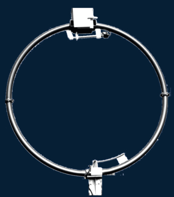 | 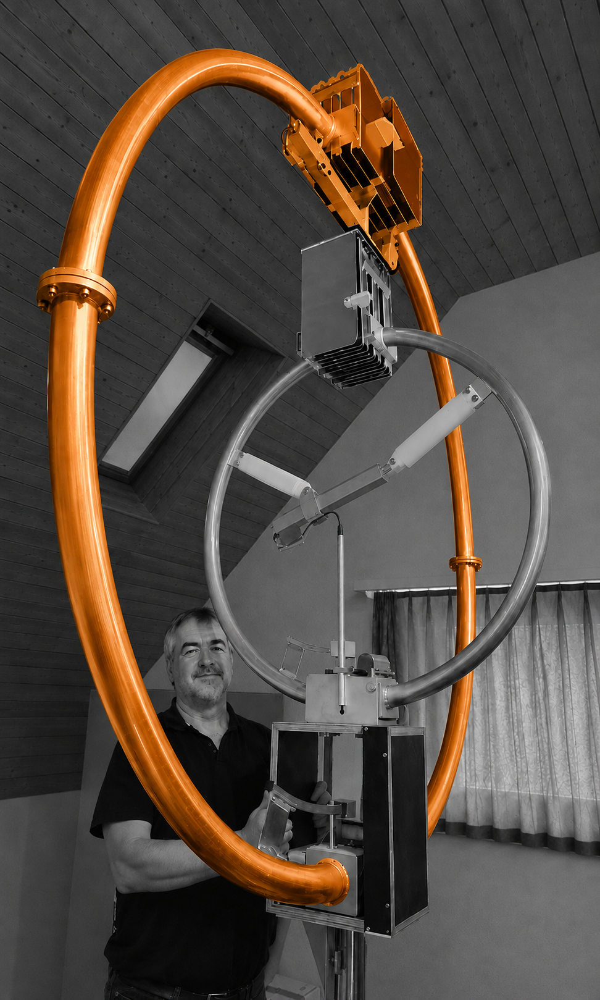 |  | 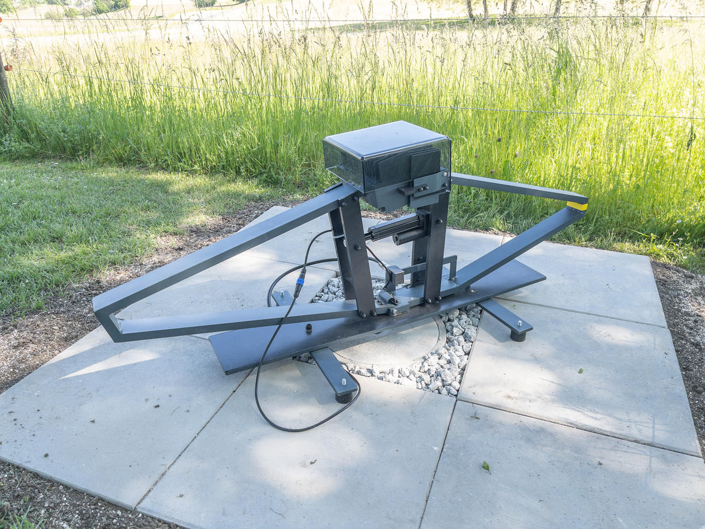 | 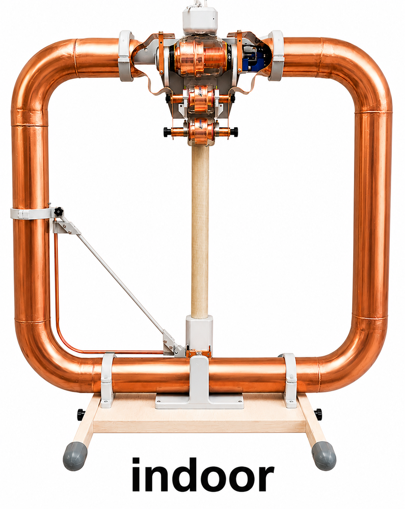 |  | 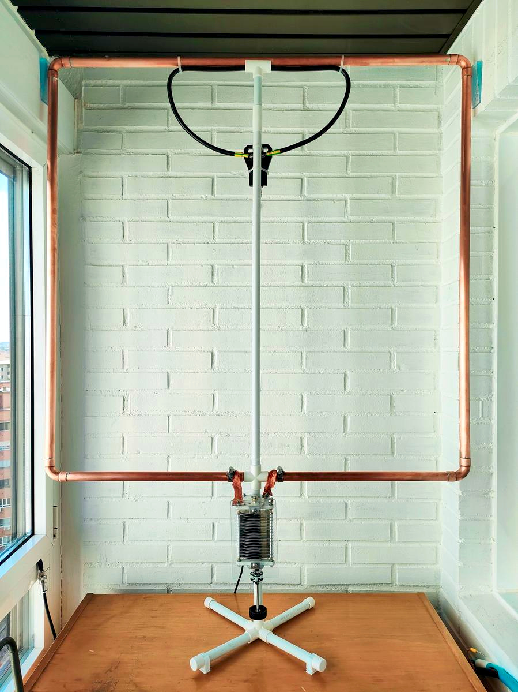 | |
| Links | description | description | description calculator | description | description | description | description | description calculator | description | description | description | description | description | description | description | description calculator | description | description | |
| Loop diameter D | m | 1.250 | 1.900 | 1.006 | |||||||||||||||
| Conductor diameter d | m | 0.010 | 0.036 | 0.100 | |||||||||||||||
| Loop count n | 1 | 2 | 1 | 1 | |||||||||||||||
| Frequency f | MHz | 1.840 | 1.900 | 1.840 | |||||||||||||||
| C/λ | 1 | 0.02 | 0.04 | 0.02 | |||||||||||||||
| Calculation accuracy | accurate | accurate | accurate | ||||||||||||||||
| Intrinsic bandwidth Bint | kHz | 33.11 | 1.72 | 1.83 | |||||||||||||||
| Source of Bint | Q webpage | SWR = 2.62 | S-Parameters | ||||||||||||||||
| Inductance L | H | 1.18e-05 | 4.83e-06 | 1.51e-06 | |||||||||||||||
| Capacitance C | pF | 634 | 1453 | 4953 | |||||||||||||||
| Unloaded Q0 | 1 | 56 | 1105 | 1005 | |||||||||||||||
| Damping resistance RT | Ohm | 2.457 | 0.0522 | 0.0174 | |||||||||||||||
| Radiation resistance RR | Ohm | 0.000267 | 0.000405 | 0.000028 | |||||||||||||||
| Loss resistance RLoss | Ohm | 2.457 | 0.0518 | 0.0173 | |||||||||||||||
| Power to antenna Pfwd | W | 10 | 200 | 100 | |||||||||||||||
| swr_min_ant | 1 | 1.00 | 1.00 | 1.10 | |||||||||||||||
| etaSWR_ant | % | 100 | 100 | 99.8 | |||||||||||||||
| Power antenna load Pload | W | 10 | 200 | 100 | |||||||||||||||
| Antenna efficiency η | % | 0.011 | 0.775 | 0.161 | |||||||||||||||
| Loop current I rms | A | 2.02 | 61.90 | 75.80 | |||||||||||||||
| Loop voltage Uloop rms | V | 275 | 3569 | 1324 | |||||||||||||||
| Magnetic dipole moment m | A m² | 4.951 | 175.511 | 60.285 | |||||||||||||||
| 80m Band | |||||||||||||||||||
| Brand | Selfmade | Selfmade | Selfmade | Selfmade | Selfmade | Selfmade | Selfmade | Selfmade | Mazzoni | Mazzoni | Mazzoni | Mazzoni | Mazzoni | Mazzoni | Mazzoni | Selfmade | Selfmade | Selfmade | |
| Name | 3P | 0.86m n2 | 1.25m n2 | epicenter | fesz_0.65 | fesz_0.95 | foil_pvc_0_71 | 1_9_heliax | Baby | Baby | Baby | Midi | Midi | Stealth | Stealth | Tubby indoor | Tubby outdoor | square_1m | |
| Location | HB9BPO | DK3SS | DK3SS | W6NBC | YO2FZT | YO2FZT | F4WDO | HB9ASB | Datasheet | HB0SM | HB9PWD | Datasheet | HB0SM | Datasheet | HE9DJB | HB9ISP | HB9ISP | EA4AGY | |
| Color | |||||||||||||||||||
| Picture | | | | | | | | ||||||||||||
| Links | description | description calculator | description calculator | description | description | description | description | description calculator | description | description | description | description calculator | description calculator | description | description | description calculator | description calculator | description | |
| Loop diameter D | m | 0.860 | 1.250 | 1.900 | 1.920 | 1.920 | 1.006 | 1.006 | |||||||||||
| Conductor diameter d | m | 0.010 | 0.010 | 0.036 | 0.073 | 0.073 | 0.100 | 0.100 | |||||||||||
| Loop count n | 1 | 2 | 2 | 1 | 1 | 1 | 1 | 1 | |||||||||||
| Frequency f | MHz | 3.650 | 3.650 | 3.624 | 3.500 | 3.650 | 3.573 | 3.573 | |||||||||||
| C/λ | 1 | 0.03 | 0.05 | 0.07 | 0.07 | 0.07 | 0.04 | 0.04 | |||||||||||
| Calculation accuracy | accurate | accurate | accurate | accurate | accurate | accurate | accurate | ||||||||||||
| Intrinsic bandwidth Bint | kHz | 6.70 | 13.18 | 4.40 | 4.00 | 6.18 | 3.46 | 2.40 | |||||||||||
| Source of Bint | Q webpage | Q webpage | SWR = 2.62 | Datasheet | S-Parameters | S-Parameters | SWR = 2.62 | ||||||||||||
| Inductance L | H | 7.32e-06 | 1.18e-05 | 4.83e-06 | 4.04e-06 | 4.04e-06 | 1.51e-06 | 1.51e-06 | |||||||||||
| Capacitance C | pF | 26 | 161 | 399 | 512 | 471 | 1314 | 1314 | |||||||||||
| Unloaded Q0 | 1 | 545 | 277 | 824 | 875 | 590 | 1033 | 1489 | |||||||||||
| Damping resistance RT | Ohm | 0.308 | 0.978 | 0.134 | 0.102 | 0.157 | 0.0328 | 0.0228 | |||||||||||
| Radiation resistance RR | Ohm | 0.000925 | 0.00413 | 0.00536 | 0.00487 | 0.00576 | 0.000398 | 0.000398 | |||||||||||
| Loss resistance RLoss | Ohm | 0.307 | 0.974 | 0.128 | 0.0967 | 0.151 | 0.0324 | 0.0224 | |||||||||||
| Power to antenna Pfwd | W | 10 | 10 | 200 | 100 | 100 | 100 | 100 | |||||||||||
| swr_min_ant | 1 | 1.00 | 1.00 | 1.00 | 1.18 | 1.70 | 1.13 | 1.00 | |||||||||||
| etaSWR_ant | % | 100 | 100 | 100 | 99.3 | 93.3 | 99.6 | 100 | |||||||||||
| Power antenna load Pload | W | 10 | 10 | 200 | 99 | 93 | 100 | 100 | |||||||||||
| Antenna efficiency η | % | 0.300 | 0.422 | 4.02 | 4.76 | 3.42 | 1.21 | 1.75 | |||||||||||
| Loop current I rms | A | 5.70 | 3.20 | 38.70 | 31.27 | 24.38 | 55.11 | 66.27 | |||||||||||
| Loop voltage Uloop rms | V | 957 | 866 | 4256 | 2779 | 2259 | 1868 | 2247 | |||||||||||
| Magnetic dipole moment m | A m² | 6.619 | 7.849 | 109.734 | 90.549 | 70.597 | 43.829 | 52.705 | |||||||||||
| 60m Band | |||||||||||||||||||
| Brand | Selfmade | Selfmade | Selfmade | Selfmade | Selfmade | Selfmade | Selfmade | Selfmade | Mazzoni | Mazzoni | Mazzoni | Mazzoni | Mazzoni | Mazzoni | Mazzoni | Selfmade | Selfmade | Selfmade | |
| Name | 3P | 0.86m n2 | 1.25m n2 | epicenter | fesz_0.65 | fesz_0.95 | foil_pvc_0_71 | 1_9_heliax | Baby | Baby | Baby | Midi | Midi | Stealth | Stealth | Tubby indoor | Tubby outdoor | square_1m | |
| Location | HB9BPO | DK3SS | DK3SS | W6NBC | YO2FZT | YO2FZT | F4WDO | HB9ASB | Datasheet | HB0SM | HB9PWD | Datasheet | HB0SM | Datasheet | HE9DJB | HB9ISP | HB9ISP | EA4AGY | |
| Color | |||||||||||||||||||
| Picture | | | | | | | | ||||||||||||
| Links | description | description | description | description | description | description | description | description calculator | description | description | description | description | description calculator | description | description | description calculator | description calculator | description | |
| Loop diameter D | m | 1.900 | 1.920 | 1.006 | 1.006 | ||||||||||||||
| Conductor diameter d | m | 0.036 | 0.073 | 0.100 | 0.100 | ||||||||||||||
| Loop count n | 1 | 1 | 1 | 1 | 1 | ||||||||||||||
| Frequency f | MHz | 5.362 | 5.362 | 5.358 | 5.357 | ||||||||||||||
| C/λ | 1 | 0.11 | 0.11 | 0.06 | 0.06 | ||||||||||||||
| Calculation accuracy | moderate | moderate | accurate | accurate | |||||||||||||||
| Intrinsic bandwidth Bint | kHz | 19.00 | 18.17 | 8.42 | 5.50 | ||||||||||||||
| Source of Bint | SWR = 2.62 | S-Parameters | S-Parameters | SWR = 2.62 | |||||||||||||||
| Inductance L | H | 4.83e-06 | 4.04e-06 | 1.51e-06 | 1.51e-06 | ||||||||||||||
| Capacitance C | pF | 182 | 218 | 584 | 585 | ||||||||||||||
| Unloaded Q0 | 1 | 282 | 295 | 636 | 974 | ||||||||||||||
| Damping resistance RT | Ohm | 0.577 | 0.461 | 0.0799 | 0.0522 | ||||||||||||||
| Radiation resistance RR | Ohm | 0.0258 | 0.0269 | 0.00201 | 0.00201 | ||||||||||||||
| Loss resistance RLoss | Ohm | 0.551 | 0.434 | 0.0779 | 0.0502 | ||||||||||||||
| Power to antenna Pfwd | W | 200 | 100 | 100 | 100 | ||||||||||||||
| swr_min_ant | 1 | 1.00 | 2.61 | 1.06 | 1.00 | ||||||||||||||
| etaSWR_ant | % | 100 | 80.1 | 99.9 | 100 | ||||||||||||||
| Power antenna load Pload | W | 200 | 80 | 100 | 100 | ||||||||||||||
| Antenna efficiency η | % | 4.47 | 4.67 | 2.52 | 3.86 | ||||||||||||||
| Loop current I rms | A | 18.62 | 13.18 | 35.36 | 43.78 | ||||||||||||||
| Loop voltage Uloop rms | V | 3030 | 1794 | 1797 | 2225 | ||||||||||||||
| Magnetic dipole moment m | A m² | 52.807 | 38.149 | 28.120 | 34.816 | ||||||||||||||
| 40m Band | |||||||||||||||||||
| Brand | Selfmade | Selfmade | Selfmade | Selfmade | Selfmade | Selfmade | Selfmade | Selfmade | Mazzoni | Mazzoni | Mazzoni | Mazzoni | Mazzoni | Mazzoni | Mazzoni | Selfmade | Selfmade | Selfmade | |
| Name | 3P | 0.86m n2 | 1.25m n2 | epicenter | fesz_0.65 | fesz_0.95 | foil_pvc_0_71 | 1_9_heliax | Baby | Baby | Baby | Midi | Midi | Stealth | Stealth | Tubby indoor | Tubby outdoor | square_1m | |
| Location | HB9BPO | DK3SS | DK3SS | W6NBC | YO2FZT | YO2FZT | F4WDO | HB9ASB | Datasheet | HB0SM | HB9PWD | Datasheet | HB0SM | Datasheet | HE9DJB | HB9ISP | HB9ISP | EA4AGY | |
| Color | |||||||||||||||||||
| Picture | | | | | | | | ||||||||||||
| Links | description | description calculator | description calculator | description calculator | description | description | description | description calculator | description calculator | description calculator | description calculator | description calculator | description calculator | description calculator | description calculator | description calculator | description calculator | description calculator | |
| Loop diameter D | m | 0.860 | 1.250 | 1.376 | 1.900 | 0.940 | 0.940 | 0.940 | 1.920 | 1.920 | 0.662 | 0.662 | 1.006 | 1.006 | 1.128 | ||||
| Conductor diameter d | m | 0.010 | 0.010 | 0.048 | 0.036 | 0.049 | 0.049 | 0.049 | 0.073 | 0.073 | 0.051 | 0.051 | 0.100 | 0.100 | 0.022 | ||||
| Loop count n | 1 | 2 | 2 | 1 | 1 | 1 | 1 | 1 | 1 | 1 | 1 | 1 | 1 | 1 | 1 | ||||
| Frequency f | MHz | 7.100 | 7.100 | 6.940 | 7.100 | 7.000 | 7.100 | 7.100 | 7.000 | 7.097 | 7.000 | 7.103 | 7.075 | 7.074 | 7.150 | ||||
| C/λ | 1 | 0.06 | 0.09 | 0.10 | 0.14 | 0.07 | 0.07 | 0.07 | 0.14 | 0.14 | 0.05 | 0.05 | 0.07 | 0.07 | 0.08 | ||||
| Calculation accuracy | accurate | accurate | moderate | moderate | accurate | accurate | accurate | moderate | moderate | accurate | accurate | accurate | accurate | accurate | |||||
| Intrinsic bandwidth Bint | kHz | 24.23 | 33.33 | 200.00 | 33.20 | 4.00 | 9.72 | 5.90 | 6.00 | 46.82 | 5.00 | 18.39 | 15.20 | 6.70 | 70.69 | ||||
| Source of Bint | Q webpage | Q webpage | SWR screenshot | SWR = 2.62 | Datasheet | S-Parameters | S-Parameters | Datasheet | S-Parameters | Datasheet | S-Parameters | S-Parameters | SWR = 2.62 | SWR estimate | |||||
| Inductance L | H | 7.32e-06 | 1.18e-05 | 2.96e-06 | 4.83e-06 | 1.79e-06 | 1.79e-06 | 1.79e-06 | 4.04e-06 | 4.04e-06 | 1.10e-06 | 1.10e-06 | 1.51e-06 | 1.51e-06 | 2.85e-06 | ||||
| Capacitance C | pF | 68.6 | 42.5 | 177 | 104 | 289 | 281 | 281 | 128 | 124 | 47 | 457 | 335 | 335 | 174 | ||||
| Unloaded Q0 | 1 | 293 | 213 | 35 | 214 | 1750 | 731 | 1204 | 1167 | 152 | 1400 | 386 | 465 | 1056 | 101 | ||||
| Damping resistance RT | Ohm | 1.115 | 2.473 | 3.725 | 1.007 | 0.0449 | 0.109 | 0.0662 | 0.152 | 1.189 | 0.0345 | 0.127 | 0.144 | 0.0636 | 1.265 | ||||
| Radiation resistance RR | Ohm | 0.0133 | 0.0593 | 0.0199 | 0.0796 | 0.00447 | 0.00473 | 0.00473 | 0.0784 | 0.0829 | 0.00110 | 0.00116 | 0.00613 | 0.00613 | 0.0101 | ||||
| Loss resistance RLoss | Ohm | 1.101 | 2.414 | 3.705 | 0.928 | 0.0404 | 0.104 | 0.0615 | 0.0739 | 1.106 | 0.0334 | 0.126 | 0.138 | 0.0574 | 1.255 | ||||
| Power to antenna Pfwd | W | 10 | 10 | 50 | 200 | 100 | 100 | 450 | 100 | 100 | 100 | 100 | 100 | 100 | 100 | ||||
| swr_min_ant | 1 | 1.00 | 1.00 | 2.70 | 1.00 | 1.18 | 1.60 | 1.17 | 1.18 | 3.93 | 1.18 | 1.07 | 1.09 | 1.00 | 1.25 | ||||
| etaSWR_ant | % | 100 | 100 | 78.9 | 100 | 99.3 | 94.7 | 99.4 | 99.3 | 64.7 | 99.3 | 99.9 | 99.8 | 100 | 98.8 | ||||
| Power antenna load Pload | W | 10 | 10 | 39 | 200 | 99 | 95 | 447 | 99 | 65 | 99 | 100 | 100 | 100 | 99 | ||||
| Antenna efficiency η | % | 1.19 | 2.40 | 0.421 | 7.90 | 9.89 | 4.11 | 7.10 | 51.1 | 4.51 | 3.16 | 0.915 | 4.24 | 9.64 | 0.790 | ||||
| Loop current I rms | A | 3.00 | 2.01 | 3.25 | 14.09 | 47.03 | 29.46 | 82.18 | 25.54 | 7.38 | 53.62 | 28.04 | 26.30 | 39.66 | 8.84 | ||||
| Loop voltage Uloop rms | V | 978 | 1059 | 421 | 3036 | 3696 | 2348 | 6550 | 4538 | 1329 | 2593 | 1376 | 1766 | 2662 | 1131 | ||||
| Magnetic dipole moment m | A m² | 3.480 | 4.935 | 4.837 | 39.948 | 32.636 | 20.447 | 57.030 | 73.933 | 21.360 | 18.446 | 9.645 | 20.920 | 31.544 | 8.837 | ||||
| 30m Band | |||||||||||||||||||
| Brand | Selfmade | Selfmade | Selfmade | Selfmade | Selfmade | Selfmade | Selfmade | Selfmade | Mazzoni | Mazzoni | Mazzoni | Mazzoni | Mazzoni | Mazzoni | Mazzoni | Selfmade | Selfmade | Selfmade | |
| Name | 3P | 0.86m n2 | 1.25m n2 | epicenter | fesz_0.65 | fesz_0.95 | foil_pvc_0_71 | 1_9_heliax | Baby | Baby | Baby | Midi | Midi | Stealth | Stealth | Tubby indoor | Tubby outdoor | square_1m | |
| Location | HB9BPO | DK3SS | DK3SS | W6NBC | YO2FZT | YO2FZT | F4WDO | HB9ASB | Datasheet | HB0SM | HB9PWD | Datasheet | HB0SM | Datasheet | HE9DJB | HB9ISP | HB9ISP | EA4AGY | |
| Color | |||||||||||||||||||
| Picture | | | | | | | | ||||||||||||
| Links | description | description calculator | description | description | description | description | description | description calculator | description | description calculator | description calculator | description | description calculator | description | description calculator | description calculator | description calculator | description | |
| Loop diameter D | m | 0.860 | 1.900 | 0.940 | 0.940 | 1.920 | 0.662 | 1.006 | 1.006 | ||||||||||
| Conductor diameter d | m | 0.010 | 0.036 | 0.049 | 0.049 | 0.073 | 0.051 | 0.100 | 0.100 | ||||||||||
| Loop count n | 1 | 2 | 1 | 1 | 1 | 1 | 1 | 1 | 1 | ||||||||||
| Frequency f | MHz | 10.100 | 10.100 | 10.114 | 10.127 | 10.116 | 10.127 | 10.135 | 10.136 | ||||||||||
| C/λ | 1 | 0.09 | 0.20 | 0.10 | 0.10 | 0.20 | 0.07 | 0.11 | 0.11 | ||||||||||
| Calculation accuracy | accurate | reduced | accurate | accurate | reduced | accurate | moderate | moderate | |||||||||||
| Intrinsic bandwidth Bint | kHz | 39.92 | 154.00 | 27.24 | 9.41 | 57.09 | 36.18 | 28.11 | 9.30 | ||||||||||
| Source of Bint | Q webpage | SWR = 2.62 | S-Parameters | S-Parameters | S-Parameters | S-Parameters | S-Parameters | SWR = 2.62 | |||||||||||
| Inductance L | H | 7.32e-06 | 4.83e-06 | 1.79e-06 | 1.79e-06 | 4.04e-06 | 1.10e-06 | 1.51e-06 | 1.51e-06 | ||||||||||
| Capacitance C | pF | 33.9 | 51.4 | 139 | 138 | 61.3 | 225 | 163 | 163 | ||||||||||
| Unloaded Q0 | 1 | 253 | 66 | 371 | 1076 | 177 | 280 | 361 | 1090 | ||||||||||
| Damping resistance RT | Ohm | 1.836 | 4.673 | 0.306 | 0.106 | 1.449 | 0.250 | 0.267 | 0.0882 | ||||||||||
| Radiation resistance RR | Ohm | 0.0544 | 0.329 | 0.0195 | 0.0196 | 0.346 | 0.00481 | 0.0259 | 0.0259 | ||||||||||
| Loss resistance RLoss | Ohm | 1.782 | 4.344 | 0.286 | 0.0860 | 1.103 | 0.245 | 0.241 | 0.0623 | ||||||||||
| Power to antenna Pfwd | W | 10 | 200 | 100 | 450 | 100 | 100 | 100 | 100 | ||||||||||
| swr_min_ant | 1 | 1.00 | 1.00 | 2.26 | 1.28 | 2.33 | 1.03 | 1.05 | 1.00 | ||||||||||
| etaSWR_ant | % | 100 | 100 | 85.1 | 98.5 | 84.1 | 100.0 | 99.9 | 100 | ||||||||||
| Power antenna load Pload | W | 10 | 200 | 85 | 443 | 84 | 100 | 100 | 100 | ||||||||||
| Antenna efficiency η | % | 2.96 | 7.05 | 5.44 | 18.3 | 20.1 | 1.93 | 9.70 | 29.4 | ||||||||||
| Loop current I rms | A | 2.33 | 6.54 | 16.68 | 64.77 | 7.62 | 20.00 | 19.36 | 33.66 | ||||||||||
| Loop voltage Uloop rms | V | 1084 | 2005 | 1894 | 7364 | 1956 | 1399 | 1861 | 3238 | ||||||||||
| Magnetic dipole moment m | A m² | 2.711 | 18.548 | 11.573 | 44.949 | 22.052 | 6.880 | 15.395 | 26.774 | ||||||||||
| 20m Band | |||||||||||||||||||
| Brand | Selfmade | Selfmade | Selfmade | Selfmade | Selfmade | Selfmade | Selfmade | Selfmade | Mazzoni | Mazzoni | Mazzoni | Mazzoni | Mazzoni | Mazzoni | Mazzoni | Selfmade | Selfmade | Selfmade | |
| Name | 3P | 0.86m n2 | 1.25m n2 | epicenter | fesz_0.65 | fesz_0.95 | foil_pvc_0_71 | 1_9_heliax | Baby | Baby | Baby | Midi | Midi | Stealth | Stealth | Tubby indoor | Tubby outdoor | square_1m | |
| Location | HB9BPO | DK3SS | DK3SS | W6NBC | YO2FZT | YO2FZT | F4WDO | HB9ASB | Datasheet | HB0SM | HB9PWD | Datasheet | HB0SM | Datasheet | HE9DJB | HB9ISP | HB9ISP | EA4AGY | |
| Color | |||||||||||||||||||
| Picture | | | | | | | | ||||||||||||
| Links | description calculator | description | description | description | description | description calculator | description calculator | description | description calculator | description calculator | description calculator | description calculator | description calculator | description calculator | description calculator | description calculator | description calculator | description calculator | |
| Loop diameter D | m | 0.762 | 0.950 | 0.729 | 0.940 | 0.940 | 0.940 | 1.920 | 1.920 | 0.662 | 0.662 | 1.006 | 1.006 | 1.128 | |||||
| Conductor diameter d | m | 0.012 | 0.008 | 0.045 | 0.049 | 0.049 | 0.049 | 0.073 | 0.073 | 0.051 | 0.051 | 0.100 | 0.100 | 0.022 | |||||
| Loop count n | 1 | 1 | 1 | 1 | 1 | 1 | 1 | 1 | 1 | 1 | 1 | 1 | 1 | 1 | |||||
| Frequency f | MHz | 14.072 | 14.085 | 14.074 | 14.000 | 14.159 | 14.173 | 14.000 | 14.156 | 14.000 | 14.168 | 14.077 | 14.074 | 14.196 | |||||
| C/λ | 1 | 0.11 | 0.14 | 0.11 | 0.14 | 0.14 | 0.14 | 0.28 | 0.28 | 0.10 | 0.10 | 0.15 | 0.15 | 0.17 | |||||
| Calculation accuracy | moderate | moderate | moderate | moderate | moderate | moderate | reduced | reduced | accurate | accurate | moderate | moderate | moderate | ||||||
| Intrinsic bandwidth Bint | kHz | 99.14 | 50.92 | 41.30 | 6.00 | 30.21 | 34.47 | 10.00 | 180.81 | 8.00 | 62.48 | 97.15 | 12.10 | 285.64 | |||||
| Source of Bint | S-Parameters | S-Parameters | S-Parameters | Datasheet | S-Parameters | S-Parameters | Datasheet | S-Parameters | Datasheet | S-Parameters | S-Parameters | SWR = 2.62 | SWR estimate | ||||||
| Inductance L | H | 2.02e-06 | 2.89e-06 | 1.31e-06 | 1.79e-06 | 1.79e-06 | 1.79e-06 | 4.04e-06 | 4.04e-06 | 1.10e-06 | 1.10e-06 | 1.51e-06 | 1.51e-06 | 2.85e-06 | |||||
| Capacitance C | pF | 63.2 | 44.2 | 97.6 | 72.3 | 70.7 | 70.6 | 32 | 31.3 | 118 | 115 | 84.6 | 84.7 | 44.1 | |||||
| Unloaded Q0 | 1 | 142 | 277 | 341 | 2333 | 469 | 411 | 1400 | 78 | 1750 | 227 | 145 | 1163 | 50 | |||||
| Damping resistance RT | Ohm | 1.261 | 0.925 | 0.340 | 0.0674 | 0.339 | 0.387 | 0.254 | 4.590 | 0.0553 | 0.432 | 0.922 | 0.115 | 5.111 | |||||
| Radiation resistance RR | Ohm | 0.0316 | 0.0771 | 0.0266 | 0.0721 | 0.0754 | 0.0757 | 1.292 | 1.352 | 0.0176 | 0.0185 | 0.0969 | 0.0968 | 0.159 | |||||
| Loss resistance RLoss | Ohm | 1.229 | 0.848 | 0.313 | -0.00471 | 0.264 | 0.311 | -1.038 | 3.238 | 0.0376 | 0.413 | 0.825 | 0.0180 | 4.952 | |||||
| Power to antenna Pfwd | W | 10 | 5 | 100 | 100 | 100 | 450 | 100 | 100 | 100 | 100 | 100 | 100 | 100 | |||||
| swr_min_ant | 1 | 1.39 | 1.31 | 2.03 | 1.18 | 1.30 | 1.50 | 1.18 | 4.17 | 1.18 | 1.08 | 1.02 | 1.00 | 1.25 | |||||
| etaSWR_ant | % | 97.4 | 98.2 | 88.5 | 99.3 | 98.3 | 96.0 | 99.3 | 62.4 | 99.3 | 99.9 | 100.0 | 100 | 98.8 | |||||
| Power antenna load Pload | W | 10 | 5 | 88 | 99 | 98 | 432 | 99 | 62 | 99 | 100 | 100 | 100 | 99 | |||||
| Antenna efficiency η | % | 2.44 | 8.18 | 6.91 | 106 | 21.8 | 18.8 | 505 | 18.4 | 31.7 | 4.28 | 10.5 | 84.3 | 3.07 | |||||
| Loop current I rms | A | 2.78 | 2.30 | 16.13 | 38.40 | 17.02 | 33.41 | 19.78 | 3.69 | 42.39 | 15.21 | 10.42 | 29.51 | 4.40 | |||||
| Loop voltage Uloop rms | V | 497 | 590 | 1869 | 6035 | 2706 | 5317 | 7030 | 1325 | 4100 | 1489 | 1391 | 3941 | 1117 | |||||
| Magnetic dipole moment m | A m² | 1.266 | 1.633 | 6.737 | 26.647 | 11.812 | 23.188 | 57.268 | 10.677 | 14.583 | 5.233 | 8.284 | 23.473 | 4.396 | |||||
| 17m Band | |||||||||||||||||||
| Brand | Selfmade | Selfmade | Selfmade | Selfmade | Selfmade | Selfmade | Selfmade | Selfmade | Mazzoni | Mazzoni | Mazzoni | Mazzoni | Mazzoni | Mazzoni | Mazzoni | Selfmade | Selfmade | Selfmade | |
| Name | 3P | 0.86m n2 | 1.25m n2 | epicenter | fesz_0.65 | fesz_0.95 | foil_pvc_0_71 | 1_9_heliax | Baby | Baby | Baby | Midi | Midi | Stealth | Stealth | Tubby indoor | Tubby outdoor | square_1m | |
| Location | HB9BPO | DK3SS | DK3SS | W6NBC | YO2FZT | YO2FZT | F4WDO | HB9ASB | Datasheet | HB0SM | HB9PWD | Datasheet | HB0SM | Datasheet | HE9DJB | HB9ISP | HB9ISP | EA4AGY | |
| Color | |||||||||||||||||||
| Picture | | | | | | | | ||||||||||||
| Links | description calculator | description | description | description | description calculator | description calculator | description | description | description | description calculator | description calculator | description | description | description | description calculator | description calculator | description | description | |
| Loop diameter D | m | 0.762 | 0.650 | 0.950 | 0.940 | 0.940 | 0.662 | 1.006 | |||||||||||
| Conductor diameter d | m | 0.012 | 0.007 | 0.008 | 0.049 | 0.049 | 0.051 | 0.100 | |||||||||||
| Loop count n | 1 | 1 | 1 | 1 | 1 | 1 | 1 | 1 | |||||||||||
| Frequency f | MHz | 18.116 | 18.102 | 18.111 | 18.128 | 18.124 | 18.116 | 18.098 | |||||||||||
| C/λ | 1 | 0.14 | 0.12 | 0.18 | 0.18 | 0.18 | 0.13 | 0.19 | |||||||||||
| Calculation accuracy | moderate | moderate | moderate | moderate | moderate | moderate | moderate | ||||||||||||
| Intrinsic bandwidth Bint | kHz | 102.16 | 39.13 | 62.57 | 121.51 | 31.06 | 121.03 | 263.43 | |||||||||||
| Source of Bint | S-Parameters | S-Parameters | S-Parameters | S-Parameters | S-Parameters | S-Parameters | S-Parameters | ||||||||||||
| Inductance L | H | 2.02e-06 | 1.85e-06 | 2.89e-06 | 1.79e-06 | 1.79e-06 | 1.10e-06 | 1.51e-06 | |||||||||||
| Capacitance C | pF | 38.1 | 41.7 | 26.7 | 43.1 | 43.2 | 70.2 | 51.2 | |||||||||||
| Unloaded Q0 | 1 | 177 | 463 | 289 | 149 | 584 | 150 | 69 | |||||||||||
| Damping resistance RT | Ohm | 1.299 | 0.456 | 1.137 | 1.364 | 0.349 | 0.836 | 2.499 | |||||||||||
| Radiation resistance RR | Ohm | 0.0872 | 0.0460 | 0.212 | 0.204 | 0.204 | 0.0496 | 0.267 | |||||||||||
| Loss resistance RLoss | Ohm | 1.212 | 0.410 | 0.925 | 1.160 | 0.145 | 0.786 | 2.233 | |||||||||||
| Power to antenna Pfwd | W | 10 | 5 | 5 | 100 | 450 | 100 | 100 | |||||||||||
| swr_min_ant | 1 | 1.04 | 1.35 | 1.14 | 3.05 | 1.13 | 1.14 | 1.02 | |||||||||||
| etaSWR_ant | % | 100.0 | 97.7 | 99.6 | 74.3 | 99.6 | 99.6 | 100.0 | |||||||||||
| Power antenna load Pload | W | 10 | 5 | 5 | 74 | 448 | 100 | 100 | |||||||||||
| Antenna efficiency η | % | 6.71 | 9.85 | 18.6 | 11.1 | 58.2 | 5.90 | 10.7 | |||||||||||
| Loop current I rms | A | 2.77 | 3.27 | 2.09 | 7.38 | 35.85 | 10.91 | 6.33 | |||||||||||
| Loop voltage Uloop rms | V | 639 | 691 | 689 | 1502 | 7296 | 1366 | 1086 | |||||||||||
| Magnetic dipole moment m | A m² | 1.264 | 1.086 | 1.483 | 5.122 | 24.882 | 3.754 | 5.031 | |||||||||||
| 15m Band | |||||||||||||||||||
| Brand | Selfmade | Selfmade | Selfmade | Selfmade | Selfmade | Selfmade | Selfmade | Selfmade | Mazzoni | Mazzoni | Mazzoni | Mazzoni | Mazzoni | Mazzoni | Mazzoni | Selfmade | Selfmade | Selfmade | |
| Name | 3P | 0.86m n2 | 1.25m n2 | epicenter | fesz_0.65 | fesz_0.95 | foil_pvc_0_71 | 1_9_heliax | Baby | Baby | Baby | Midi | Midi | Stealth | Stealth | Tubby indoor | Tubby outdoor | square_1m | |
| Location | HB9BPO | DK3SS | DK3SS | W6NBC | YO2FZT | YO2FZT | F4WDO | HB9ASB | Datasheet | HB0SM | HB9PWD | Datasheet | HB0SM | Datasheet | HE9DJB | HB9ISP | HB9ISP | EA4AGY | |
| Color | |||||||||||||||||||
| Picture | | | | | | | | ||||||||||||
| Links | description calculator | description | description | description | description calculator | description calculator | description calculator | description | description calculator | description calculator | description calculator | description | description | description calculator | description calculator | description calculator | description calculator | description | |
| Loop diameter D | m | 0.762 | 0.650 | 0.950 | 0.729 | 0.940 | 0.940 | 0.940 | 0.662 | 0.662 | 1.006 | 1.006 | |||||||
| Conductor diameter d | m | 0.012 | 0.007 | 0.008 | 0.045 | 0.049 | 0.049 | 0.049 | 0.051 | 0.051 | 0.100 | 0.100 | |||||||
| Loop count n | 1 | 1 | 1 | 1 | 1 | 1 | 1 | 1 | 1 | 1 | 1 | 1 | |||||||
| Frequency f | MHz | 21.253 | 21.062 | 21.041 | 21.127 | 21.000 | 21.226 | 21.209 | 21.000 | 21.235 | 21.075 | 21.074 | |||||||
| C/λ | 1 | 0.17 | 0.14 | 0.21 | 0.16 | 0.21 | 0.21 | 0.21 | 0.15 | 0.15 | 0.22 | 0.22 | |||||||
| Calculation accuracy | moderate | moderate | reduced | moderate | reduced | reduced | reduced | moderate | moderate | reduced | reduced | ||||||||
| Intrinsic bandwidth Bint | kHz | 123.56 | 52.74 | 90.02 | 83.63 | 12.00 | 82.69 | 182.58 | 15.00 | 181.50 | 191.98 | 66.00 | |||||||
| Source of Bint | S-Parameters | S-Parameters | S-Parameters | S-Parameters | Datasheet | S-Parameters | S-Parameters | Datasheet | S-Parameters | S-Parameters | SWR = 2.62 | ||||||||
| Inductance L | H | 2.02e-06 | 1.85e-06 | 2.89e-06 | 1.31e-06 | 1.79e-06 | 1.79e-06 | 1.79e-06 | 1.10e-06 | 1.10e-06 | 1.51e-06 | 1.51e-06 | |||||||
| Capacitance C | pF | 27.7 | 30.8 | 19.8 | 43.3 | 32.1 | 31.5 | 31.5 | 52.2 | 51.1 | 37.8 | 37.8 | |||||||
| Unloaded Q0 | 1 | 172 | 399 | 234 | 253 | 1750 | 257 | 116 | 1400 | 117 | 110 | 319 | |||||||
| Damping resistance RT | Ohm | 1.572 | 0.615 | 1.635 | 0.689 | 0.135 | 0.928 | 2.050 | 0.104 | 1.254 | 1.822 | 0.626 | |||||||
| Radiation resistance RR | Ohm | 0.166 | 0.0845 | 0.388 | 0.136 | 0.369 | 0.386 | 0.384 | 0.0898 | 0.0939 | 0.493 | 0.493 | |||||||
| Loss resistance RLoss | Ohm | 1.406 | 0.530 | 1.247 | 0.553 | -0.234 | 0.543 | 1.666 | 0.0139 | 1.160 | 1.328 | 0.133 | |||||||
| Power to antenna Pfwd | W | 10 | 5 | 5 | 100 | 100 | 100 | 450 | 100 | 100 | 100 | 100 | |||||||
| swr_min_ant | 1 | 1.03 | 1.07 | 1.06 | 1.70 | 1.18 | 1.50 | 3.12 | 1.18 | 1.29 | 1.02 | 1.00 | |||||||
| etaSWR_ant | % | 100.0 | 99.9 | 99.9 | 93.3 | 99.3 | 96.0 | 73.5 | 99.3 | 98.4 | 100.0 | 100 | |||||||
| Power antenna load Pload | W | 10 | 5 | 5 | 93 | 99 | 96 | 331 | 99 | 98 | 100 | 100 | |||||||
| Antenna efficiency η | % | 10.5 | 13.7 | 23.7 | 18.4 | 272 | 39.9 | 13.8 | 86.0 | 7.37 | 27.1 | 78.8 | |||||||
| Loop current I rms | A | 2.52 | 2.85 | 1.75 | 11.64 | 27.15 | 10.17 | 12.70 | 30.96 | 8.86 | 7.41 | 12.64 | |||||||
| Loop voltage Uloop rms | V | 682 | 700 | 668 | 2024 | 6401 | 2423 | 3025 | 4491 | 1300 | 1482 | 2527 | |||||||
| Magnetic dipole moment m | A m² | 1.149 | 0.946 | 1.239 | 4.860 | 18.842 | 7.056 | 8.815 | 10.650 | 3.048 | 5.893 | 10.050 | |||||||
| 12m Band | |||||||||||||||||||
| Brand | Selfmade | Selfmade | Selfmade | Selfmade | Selfmade | Selfmade | Selfmade | Selfmade | Mazzoni | Mazzoni | Mazzoni | Mazzoni | Mazzoni | Mazzoni | Mazzoni | Selfmade | Selfmade | Selfmade | |
| Name | 3P | 0.86m n2 | 1.25m n2 | epicenter | fesz_0.65 | fesz_0.95 | foil_pvc_0_71 | 1_9_heliax | Baby | Baby | Baby | Midi | Midi | Stealth | Stealth | Tubby indoor | Tubby outdoor | square_1m | |
| Location | HB9BPO | DK3SS | DK3SS | W6NBC | YO2FZT | YO2FZT | F4WDO | HB9ASB | Datasheet | HB0SM | HB9PWD | Datasheet | HB0SM | Datasheet | HE9DJB | HB9ISP | HB9ISP | EA4AGY | |
| Color | |||||||||||||||||||
| Picture | | | | | | | | ||||||||||||
| Links | description calculator | description | description | description | description calculator | description calculator | description | description | description | description calculator | description calculator | description | description | description | description calculator | description calculator | description calculator | description | |
| Loop diameter D | m | 0.762 | 0.650 | 0.950 | 0.940 | 0.940 | 0.662 | 1.006 | 1.006 | ||||||||||
| Conductor diameter d | m | 0.012 | 0.007 | 0.008 | 0.049 | 0.049 | 0.051 | 0.100 | 0.100 | ||||||||||
| Loop count n | 1 | 1 | 1 | 1 | 1 | 1 | 1 | 1 | 1 | ||||||||||
| Frequency f | MHz | 24.947 | 24.904 | 24.917 | 24.937 | 24.917 | 24.911 | 24.922 | 24.915 | ||||||||||
| C/λ | 1 | 0.20 | 0.17 | 0.25 | 0.25 | 0.25 | 0.17 | 0.26 | 0.26 | ||||||||||
| Calculation accuracy | moderate | moderate | reduced | reduced | reduced | moderate | reduced | reduced | |||||||||||
| Intrinsic bandwidth Bint | kHz | 165.64 | 83.55 | 160.97 | 79.78 | 99.23 | 257.24 | 273.44 | 201.00 | ||||||||||
| Source of Bint | S-Parameters | S-Parameters | S-Parameters | S-Parameters | S-Parameters | S-Parameters | S-Parameters | SWR = 2.62 | |||||||||||
| Inductance L | H | 2.02e-06 | 1.85e-06 | 2.89e-06 | 1.79e-06 | 1.79e-06 | 1.10e-06 | 1.51e-06 | 1.51e-06 | ||||||||||
| Capacitance C | pF | 20.1 | 22 | 14.1 | 22.8 | 22.8 | 37.1 | 27 | 27 | ||||||||||
| Unloaded Q0 | 1 | 151 | 298 | 155 | 313 | 251 | 97 | 91 | 124 | ||||||||||
| Damping resistance RT | Ohm | 2.107 | 0.974 | 2.924 | 0.896 | 1.114 | 1.777 | 2.594 | 1.907 | ||||||||||
| Radiation resistance RR | Ohm | 0.316 | 0.166 | 0.770 | 0.740 | 0.738 | 0.178 | 0.974 | 0.973 | ||||||||||
| Loss resistance RLoss | Ohm | 1.790 | 0.808 | 2.154 | 0.155 | 0.376 | 1.599 | 1.620 | 0.934 | ||||||||||
| Power to antenna Pfwd | W | 10 | 5 | 5 | 100 | 450 | 100 | 100 | 100 | ||||||||||
| swr_min_ant | 1 | 1.08 | 1.06 | 1.07 | 1.04 | 1.34 | 1.40 | 1.02 | 1.00 | ||||||||||
| etaSWR_ant | % | 99.9 | 99.9 | 99.9 | 100.0 | 97.9 | 97.2 | 100.0 | 100 | ||||||||||
| Power antenna load Pload | W | 10 | 5 | 5 | 100 | 441 | 97 | 100 | 100 | ||||||||||
| Antenna efficiency η | % | 15.0 | 17.0 | 26.3 | 82.6 | 64.9 | 9.77 | 37.5 | 51.0 | ||||||||||
| Loop current I rms | A | 2.18 | 2.27 | 1.31 | 10.56 | 19.89 | 7.40 | 6.21 | 7.24 | ||||||||||
| Loop voltage Uloop rms | V | 691 | 657 | 592 | 2958 | 5563 | 1273 | 1468 | 1712 | ||||||||||
| Magnetic dipole moment m | A m² | 0.992 | 0.752 | 0.926 | 7.331 | 13.801 | 2.544 | 4.937 | 5.759 | ||||||||||
| 10m Band | |||||||||||||||||||
| Brand | Selfmade | Selfmade | Selfmade | Selfmade | Selfmade | Selfmade | Selfmade | Selfmade | Mazzoni | Mazzoni | Mazzoni | Mazzoni | Mazzoni | Mazzoni | Mazzoni | Selfmade | Selfmade | Selfmade | |
| Name | 3P | 0.86m n2 | 1.25m n2 | epicenter | fesz_0.65 | fesz_0.95 | foil_pvc_0_71 | 1_9_heliax | Baby | Baby | Baby | Midi | Midi | Stealth | Stealth | Tubby indoor | Tubby outdoor | square_1m | |
| Location | HB9BPO | DK3SS | DK3SS | W6NBC | YO2FZT | YO2FZT | F4WDO | HB9ASB | Datasheet | HB0SM | HB9PWD | Datasheet | HB0SM | Datasheet | HE9DJB | HB9ISP | HB9ISP | EA4AGY | |
| Color | |||||||||||||||||||
| Picture | | | | | | | | ||||||||||||
| Links | description calculator | description | description | description calculator | description calculator | description calculator | description calculator | description | description calculator | description calculator | description calculator | description | description | description calculator | description calculator | description calculator | description calculator | description | |
| Loop diameter D | m | 0.762 | 1.376 | 0.650 | 0.950 | 0.729 | 0.940 | 0.940 | 0.940 | 0.662 | 0.662 | 1.006 | 1.006 | ||||||
| Conductor diameter d | m | 0.012 | 0.048 | 0.007 | 0.008 | 0.045 | 0.049 | 0.049 | 0.049 | 0.051 | 0.051 | 0.100 | 0.100 | ||||||
| Loop count n | 1 | 1 | 1 | 1 | 1 | 1 | 1 | 1 | 1 | 1 | 1 | 1 | 1 | ||||||
| Frequency f | MHz | 28.604 | 31.870 | 28.079 | 28.087 | 28.093 | 28.000 | 28.862 | 28.832 | 28.000 | 28.850 | 28.070 | 28.074 | ||||||
| C/λ | 1 | 0.23 | 0.46 | 0.19 | 0.28 | 0.21 | 0.28 | 0.28 | 0.28 | 0.19 | 0.20 | 0.30 | 0.30 | ||||||
| Calculation accuracy | reduced | questionable | moderate | reduced | reduced | reduced | reduced | reduced | moderate | reduced | reduced | reduced | |||||||
| Intrinsic bandwidth Bint | kHz | 201.91 | 700.00 | 111.12 | 207.21 | 189.14 | 20.00 | 147.82 | 271.30 | 25.00 | 376.28 | 356.89 | 350.00 | ||||||
| Source of Bint | S-Parameters | SWR screenshot | S-Parameters | S-Parameters | S-Parameters | Datasheet | S-Parameters | S-Parameters | Datasheet | S-Parameters | S-Parameters | SWR = 2.62 | |||||||
| Inductance L | H | 2.02e-06 | 2.96e-06 | 1.85e-06 | 2.89e-06 | 1.31e-06 | 1.79e-06 | 1.79e-06 | 1.79e-06 | 1.10e-06 | 1.10e-06 | 1.51e-06 | 1.51e-06 | ||||||
| Capacitance C | pF | 15.3 | 8.41 | 17.3 | 11.1 | 24.5 | 18.1 | 17 | 17.1 | 29.4 | 27.7 | 21.3 | 21.3 | ||||||
| Unloaded Q0 | 1 | 142 | 46 | 253 | 136 | 149 | 1400 | 195 | 106 | 1120 | 77 | 79 | 80 | ||||||
| Damping resistance RT | Ohm | 2.568 | 13.038 | 1.295 | 3.764 | 1.557 | 0.225 | 1.660 | 3.046 | 0.173 | 2.599 | 3.386 | 3.321 | ||||||
| Radiation resistance RR | Ohm | 0.550 | 9.725 | 0.269 | 1.254 | 0.429 | 1.186 | 1.342 | 1.336 | 0.286 | 0.323 | 1.582 | 1.583 | ||||||
| Loss resistance RLoss | Ohm | 2.018 | 3.314 | 1.026 | 2.511 | 1.129 | -0.961 | 0.318 | 1.710 | -0.113 | 2.277 | 1.804 | 1.738 | ||||||
| Power to antenna Pfwd | W | 10 | 50 | 5 | 5 | 100 | 100 | 100 | 450 | 100 | 100 | 100 | 100 | ||||||
| swr_min_ant | 1 | 1.11 | 1.10 | 1.06 | 1.04 | 1.05 | 1.18 | 1.43 | 3.16 | 1.18 | 1.65 | 1.02 | 1.00 | ||||||
| etaSWR_ant | % | 99.7 | 99.8 | 99.9 | 100.0 | 99.9 | 99.3 | 96.9 | 73.0 | 99.3 | 94.0 | 100.0 | 100 | ||||||
| Power antenna load Pload | W | 10 | 50 | 5 | 5 | 100 | 99 | 97 | 328 | 99 | 94 | 100 | 100 | ||||||
| Antenna efficiency η | % | 21.4 | 74.4 | 20.7 | 33.3 | 27.5 | 524 | 78.3 | 32.0 | 164 | 11.7 | 46.7 | 47.7 | ||||||
| Loop current I rms | A | 1.97 | 1.96 | 1.96 | 1.15 | 8.01 | 21.03 | 7.64 | 10.38 | 23.98 | 6.01 | 5.43 | 5.49 | ||||||
| Loop voltage Uloop rms | V | 717 | 1161 | 643 | 588 | 1853 | 6611 | 2476 | 3362 | 4639 | 1198 | 1447 | 1462 | ||||||
| Magnetic dipole moment m | A m² | 0.898 | 2.908 | 0.652 | 0.817 | 3.345 | 14.595 | 5.302 | 7.207 | 8.249 | 2.068 | 4.322 | 4.364 | ||||||